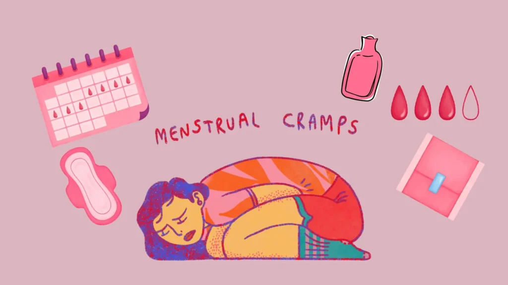
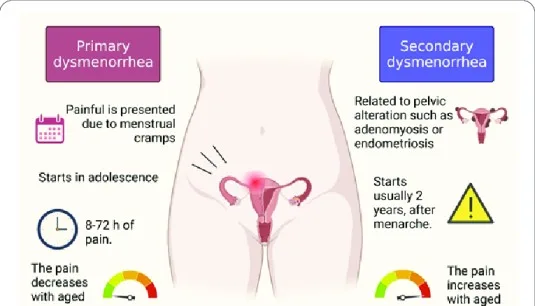
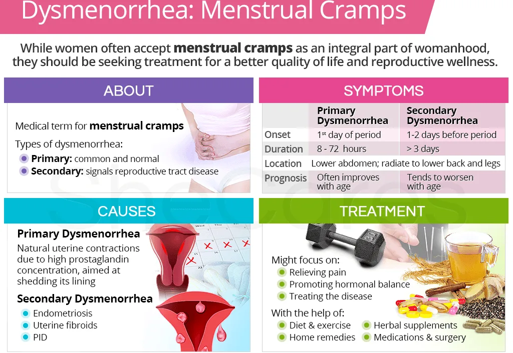
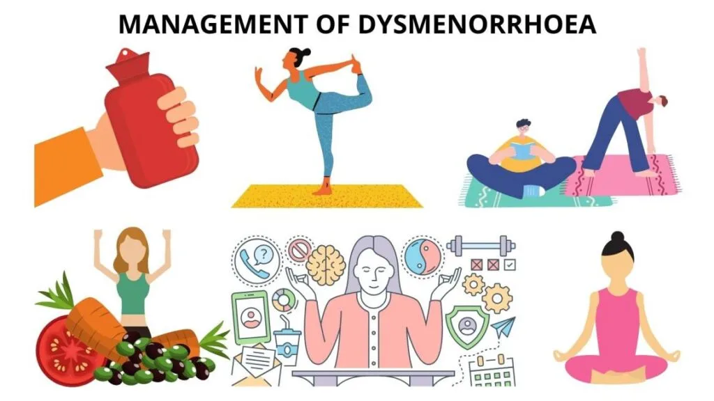
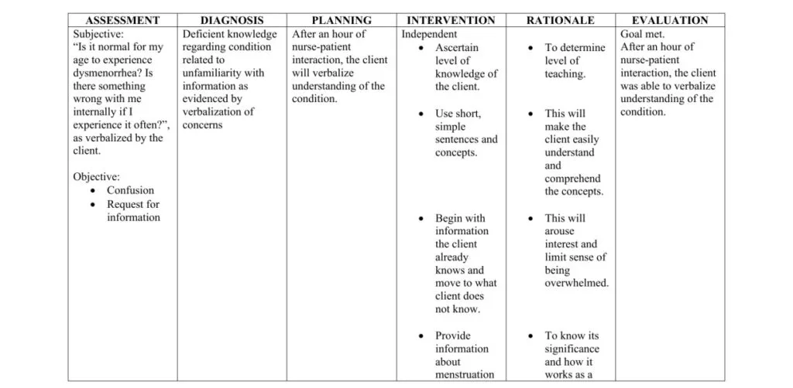

Expanded Nursing Uganda Explanation
Dysmenorrhoea should be understood beyond a short definition. Link the concept to patient history, focused assessment, common risks, nursing priorities, documentation and evaluation of outcomes.
01 DYSMENORRHOEA
Dysmenorrhea is a medical term used to describe painful menstrual cramps that occur just before or during menstruation (the monthly shedding of the uterine lining).
Dysmenorrhea refers to painful menstrual periods.
Nearly 50% of all women have some degree of pain associated with their periods. About 10% are unable to perform their normal activities because of this pain.
Dysmenorrhoea can occur at any age, though uncommon in the first 6 months after the onset of menses and relatively uncommon in the years prior to menopause. The most common ages for this problem to occur are in the late teens and early twenties.
02 Types of dysmenorrhoea
The exact cause of primary dysmenorrhea is not fully understood , but it is believed to be related to the release of certain chemicals called prostaglandins in the uterus at the time of menstrual period. The prostaglandin causes contractions of the muscle wall of the uterus, which are called menstrual cramps.
Secondary dysmenorrhea means pelvic pain caused by a disorder or disease.
- Uterine Fibroids : Noncancerous growths in the uterus.
- Endometriosis : The presence of endometrial tissue outside the uterus.
- Adenomyosis : The occurrence of endometrial tissue within the muscular walls of the uterus.
- Chronic Pelvic Inflammatory Disease (PID) : Long-term inflammation of the female reproductive organs.
- Endometrial Polyps : Abnormal tissue growth on the inner lining of the uterus.
- Leiomyomata : Benign tumors of the uterine muscle.
- Intrauterine Device (IUD) Use : Complications related to the use of contraceptive devices placed in the uterus.
03 Signs and Symptoms of Dysmenorrhoea
Women with dysmenorrhea tend to begin experiencing symptoms approximately 12 hours before the onset of menses. Common presenting symptoms of dysmenorrhoea include:
- Cramping pain in the lower abdomen : Lower abdominal pain (LAP) is a hallmark symptom, usually occurring 3-4 days or even a week before menstruation. The intensity of the pain, ranging from mild to colicky or crampy, extending to the back, thighs and legs, may either improve or exacerbate with the onset of menstruation.
- Bilateral Lower Quadrant Pain : The pain associated with secondary dysmenorrhea often extends to both lower abdominal quadrants.
- Backache : Patients may experience lower back pain.
- Menorrhagia : Characterized by excessive menstrual bleeding.
- Painful Coitus (Dyspareunia): Discomfort or pain during sexual intercourse.
- Infertility : Difficulty conceiving or achieving pregnancy.
- Nausea : Some individuals may experience feelings of nausea.
- Headache : Headaches are a common symptom associated with dysmenorrhea.
- Vomiting : In severe cases, dysmenorrhea can lead to vomiting.
- Fatigue : Fatigue is a general feeling of tiredness or lack of energy that may accompany dysmenorrhea.
- Dizziness : Some individuals may experience dizziness or lightheadedness.
- Constipation or Diarrhoea : Dysmenorrhea can be associated with bowel changes, including diarrhoea or constipation.
- Fainting : In severe cases, dysmenorrhea may lead to fainting.
- Fever : Although less common, some individuals may experience a mild fever during dysmenorrhea.
04 Predisposing factors
- Narrow Cervical Os (Stenosis): During menstruation, the uterus contracts to shed its lining. If the cervical os is narrow, it can result in increased tension during these contractions, leading to pain.
- Reduced Blood Supply to the Endometrium (Ischaemia): Inadequate blood supply to the endometrium can contribute to the development of primary dysmenorrhea.
- Hormonal Imbalance : Fluctuations in hormone levels, particularly prostaglandins, can lead to increased uterine contractions and inflammation, resulting in pain.
- Retroverted Uterus : A retroverted uterus, where the uterus is tilted backward, can cause increased tension and discomfort during menstruation.
- Psychological or Social Stress : Emotional stress, fear, or anxiety can exacerbate the perception of pain during menstruation.
05 Diagnosis
- History taking : It is through history taking, asking about the nature of pain, duration and when it occurs. This is often confirmatory.
- Physical examination : It is also through physical examination to rule out pelvic tumours, endometriosis which is often absent.
06 Management of Dysmenorrhoea
Aims of Management
- Alleviating pain and discomfort associated with menstruation.
- Identifying and addressing any underlying causes or contributing factors.
- Minimizing the impact of dysmenorrhoea on daily activities and quality of life.
History taking
- Take a detailed gynaecological history , including age, parity, first day of the last menstrual period, age of menses onset, length and regularity of cycles, and duration of flow.
- Take a pain history to include severity, duration, character, location, radiation, and the relationship of pain to menarche, menses, coitus, bowel movements, voiding, and any other associated symptoms.
- Document previous known or suspected pelvic problems.
- Review past obstetric history , including first-trimester losses.
- Review the past history for other organ system problems that can present with pelvic pain.
- Review pelvic infection history , with special attention to recent or past STIs, including the history of STIs among current or former partners.
- Review contraceptive history with special attention to past or present IUD use and oral contraception. Document any changes in symptoms with particular contraceptive use.
- Review surgical history , including surgical procedures involving the cervix, Caesarean delivery, gynaecological procedures, and other abdominal procedures.
General observation
- TPR/BP and careful examination of the reproductive system, including a complete gynecologic examination with cervical testing (abdominal, vaginal, and rectal examination), laparoscopy, and blood tests for progesterone and oestrogen.
- Begin treatment 2 days before menstruation begins and continue until 2 days after the period has stopped.
- Avoid additive drugs since this treatment is for a long period.
- Contraceptive drugs like COCs may be given to suppress ovulation and relieve pain. Usually given for 4-6 months, and many get permanent relief after this treatment has been stopped.
- Dilation and Curettage (D&C) may be of help to remove necrotic tissue of the endometrium, but usually not encouraged since it increases the risk of infections.
- Cervical stenosis can be treated by surgical widening of the canal.
- Effective counselling is important since pain is usually psychological to avoid drug dependence and abuse.
- Natural processes like childbirth or ageing can contribute to the reduction of pain as uterine muscles relax.
- Severe dysmenorrhea may require prescription prostaglandin inhibitors (non-steroidal anti-inflammatory drugs – NSAIDs). Over-the-counter prostaglandin inhibitors: Aspirin 600 mg Q.I.D, Ibuprofen 400 mg Q.I.D.
- Psychotherapy, i.e., explanation and assurance.
- Well-balanced diet.
- Rest and regular aerobic exercises.
- Encourage her to empty bowel during menses.
Drugs used in the management of symptoms of primary dysmenorrhoea either inhibit prostaglandin production or inhibit ovulation.
- Class of Drug Example Remarks
- Nonsteroidal Anti-inflammatory Drugs (NSAIDs) Mefenamic acid 500mg 8 hourly. Ibuprofen 400mg 8 hourly. Diclofenac- 50mg 8 hourly. Indomethacin 50mg 8 hourly. NSAIDs should be taken one day before onset of symptoms and continue for 2-3 days. All the listed NSAIDs should not be given to patients with active peptic ulcer disease.
- Combined Oral Contraceptives (COCs) Pilplan plus, Microgynon COCs suppress ovulation leading to a decrease in the production of progesterone concentration, which is needed in the production of prostaglandin. They are recommended for cases that have failed to respond to NSAIDs. COCs should be given for at least 3 months (3 cycles).
- Depot Progestogens Depo provera, Injecta plan Depot progesterone acts by suppressing ovulation and thus relieving dysmenorrhoea.
- Management is according to the cause of dysmenorrhea.
- For cases of causes of secondary dysmenorrhea, surgical measures (e.g Dilatation and curettage and presacral neurectomy, hysterectomy, etc.) can be the best strategy (treatment is determined by the cause).
Lifestyle and Complementary Management:
- Encourage enough rest, sleep, exercises, hygiene, and a good diet.
- Explore alternative therapies such as hypnotherapy and acupuncture.
07 Nursing Management
Nursing Diagnosis: Acute pain related to increased uterine contractility evidenced by verbalization of the girl or woman.
Nursing Interventions:
- Warm the abdomen to cause vasodilation and reduce spasmodic contractions.
- Massage the painful abdominal area to reduce pain through therapeutic touch.
- Perform light exercises to improve blood flow to the uterus and enhance muscle tone.
- Implement relaxation techniques to reduce pressure and induce relaxation.
- Administer analgesics as prescribed to block nociceptive receptors.
Nursing Diagnosis : Ineffective individual coping related to emotional stress evidenced by the patient’s verbalization.
Nursing Interventions:
- Assess the patient’s understanding of the condition, as anxiety is influenced by knowledge.
- Provide opportunities for the patient to discuss and identify coping mechanisms.
- Ensure the patient gets periods of sleep or rest to promote relaxation.
Nursing Diagnosis: Risk for imbalanced nutrition less than body requirements related to nausea and vomiting.
Nursing Interventions:
- Provide the patient with periods of sleep or rest for overall relaxation.
- Encourage small, frequent feeds that are easily tolerated.
- Administer antiemetic drugs like promethazine to block emetic centres.
- Assess the severity and characteristics of pain, including location, intensity, and duration.
- Monitor vital signs and assess for signs of complications.
- Evaluate menstrual patterns, duration, and heaviness of bleeding.
- Assess the impact on the patient’s quality of life, emotional well-being, and daily activities.
- Provide pain management through prescribed medications.
- Apply heat therapy and educate the patient on proper techniques.
- Teach relaxation techniques, deep breathing exercises, and guided imagery.
- Encourage rest in a comfortable position during painful episodes.
- Educate the patient about the condition, its management, and treatment options.
- Collaborate with the healthcare team for appropriate management.
- Offer emotional support, acknowledging the patient’s pain and distress.
08 Nursing Uganda Clinical Lens
Use Dysmenorrhoea as a practical nursing topic, not only a memorized definition. Start with normal structure and function, then connect it to assessment findings and disease.
- What to understand first: define dysmenorrhoea, identify the normal or expected pattern, then explain what changes when the patient is unwell.
- Why it matters in care: the nurse must recognize risk early, explain findings clearly, document accurately and know when to escalate.
- How to revise it: connect each point to assessment, nursing diagnosis or care problem, intervention, rationale and evaluation.
09 Assessment Guide
- Relevant inspection, palpation, movement, auscultation, vital signs or neurological checks.
- Normal findings, abnormal findings and what each abnormality may indicate.
- Patient history, risk factors and how the body system affects other systems.
10 Nursing Priorities, Rationales and Outcomes
- Use anatomy to explain symptoms and guide focused assessment.
- Recognize findings that need urgent escalation.
- Teach the patient using simple body-system language.
The rationale for these priorities is patient safety: nursing actions should prevent deterioration, reduce discomfort, support recovery and create clear evidence for the next caregiver.
- Expected outcome: The learner can explain normal function, identify abnormal signs and connect them to nursing action.
11 Patient Teaching and Revision Check
- Explain dysmenorrhoea in simple language the patient or caregiver can repeat back.
- Teach warning signs, medicine or follow-up instructions, hygiene or lifestyle points where relevant.
- For exams, prepare a short answer using: definition, causes or risk factors, signs, assessment, management, complications and prevention.
- For ward practice, document baseline findings, actions taken, patient response and the plan for review.
Illustrations and Diagrams (8)







Related Video Lectures
Watch nursing lecture videos on YouTube for this topic. Opens in a new tab.
Watch on YouTubeExternal link: YouTube may use its own cookies and terms. Nursing Uganda is not affiliated with YouTube.